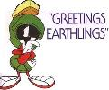

Wynn Ho Homepage

|
|
|
| |
| This is me |
|
|
| This is me in my dreams |
I am a Research Associate in Physics and Astronomy at Haverford College.
I received my Ph.D. (2003) and M.S. (2001) in
Astronomy at
Cornell University
and my B.A. (1996) in Astrophysics
and B.A. in Physics at
UC Berkeley.
My primary research interests are in theoretical and high-energy astrophysics,
including compact stars, radiative transfer and
photon propagation in strong magnetic and gravitational fields,
neutrino, plasma, and superfluid physics,
accretion astrophysics,
gravitational wave sources,
magnetic field evolution, and
stellar oscillations.
Quick Links
 Last updated: 1 April 2021
Last updated: 1 April 2021